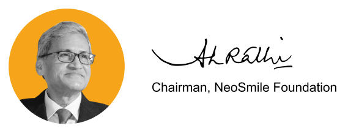

|
Hi All,
With the spirit and enthusiasm to better the community we live in and share with millions of
people, our mission is to
create sustainable change for the marginalized and underprivileged sections of society. As part
of our community
service, awareness programs about environmental sustainability and renewable energy is an urgent
part of our CSR
endeavours.
By working on the ground principles of humanity, ethics, and integrity, our initiatives and
efforts strive to empower
the needy in the best possible way that we can. As we prioritize environmental sustainability,
we are consciously moving
towards transforming all lives with energy independence. The objective is to conserve our
ecosystem by adopting projects
that drive renewable energy and by association, the larger environment.
I take this opportunity to thank my entire team and our partners who have been the torch-bearers
in our pursuit of
driving happiness and helping the community. The mission is to bring a 'Smile' and spread it
universally. I thank our
volunteers for the countless hours they've so selflessly spent in support of this noble cause.
We stay true to our commitment to building a more inclusive and sustainable world that keeps
getting stronger as we
synthesize our efforts towards a greener, safer, and better tomorrow for everyone.

|